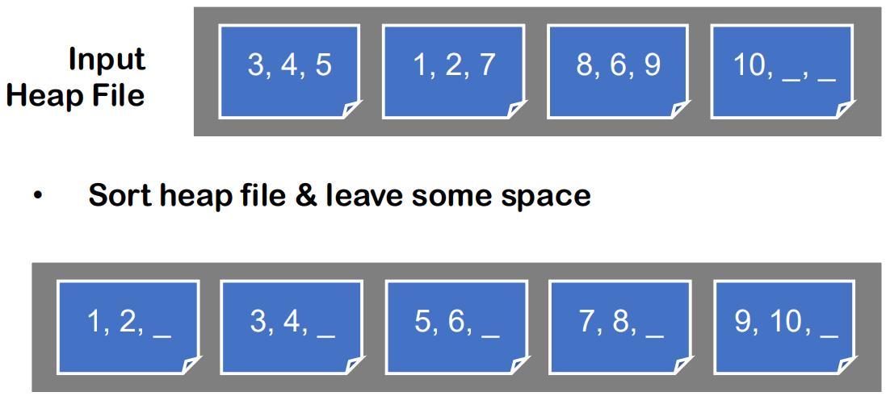
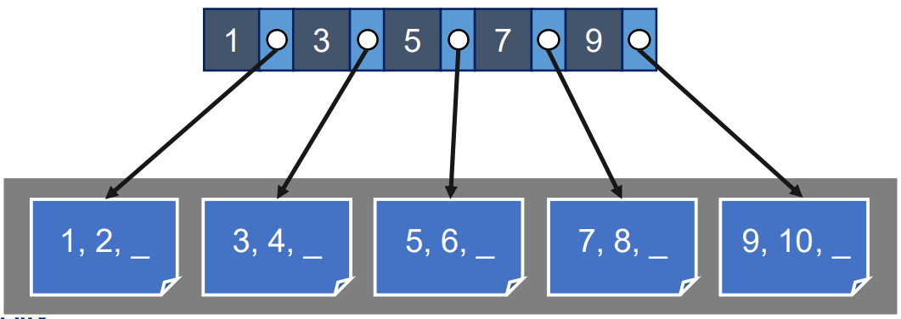
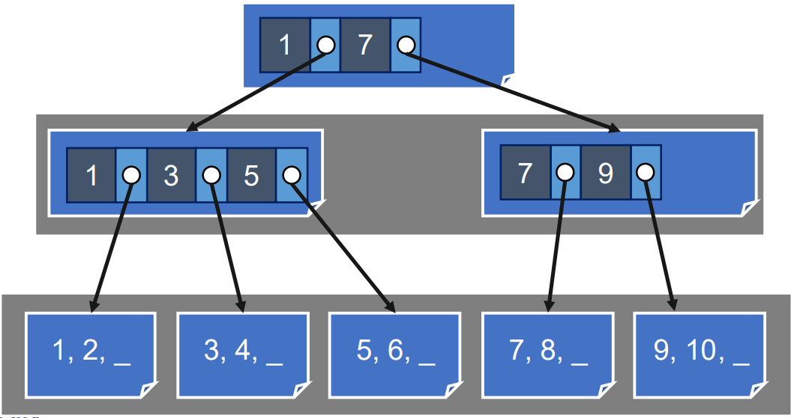
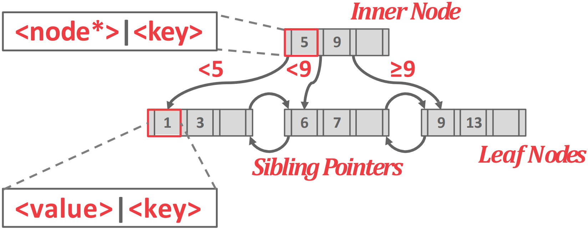
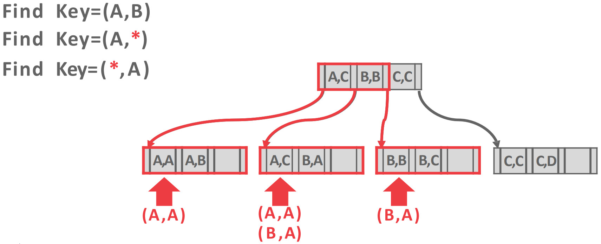
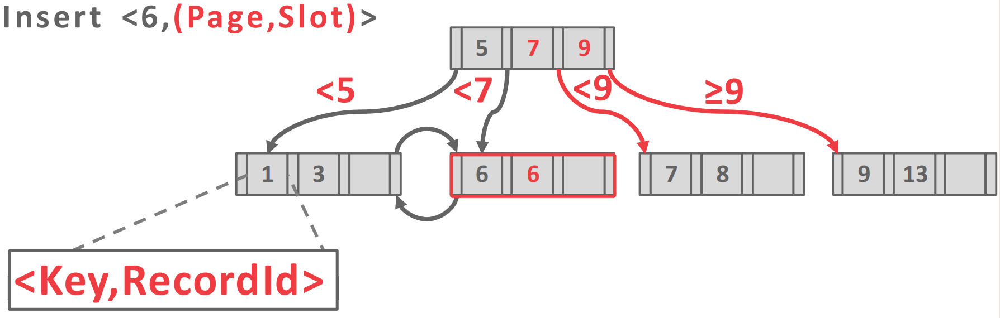
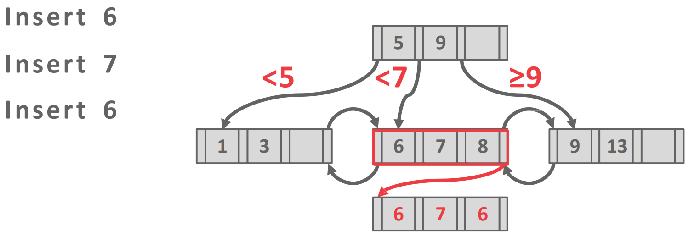
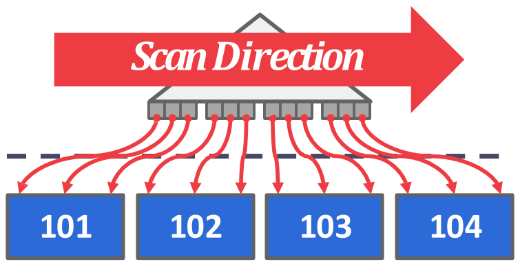
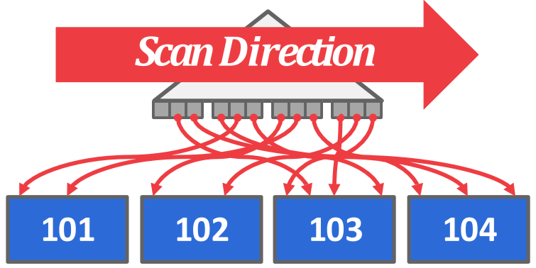

서울대학교 데이터사이언스대학원 정형수 교수님의 "데이터사이언스 응용을 위한 빅데이터 및 지식 관리 시스템" 강의를 필기한 내용입니다.
Index data structure
- Index: table 의 subset of attr 를 이용해 빠르게 RID 를 얻어낼 수 있도록 해주는 자료구조
- table data 가 바뀌면 (즉, RID 가 추가되거나 변경되면) index 도 변경된다
- 를 위한 자료구조를 결정해야 하는데
- storage overhead: 차지하는 용량이 적어야 하고
- maintenance overhead: table data 가 변경되었을 때 수행되는 작업에 대한 overhead
- 들어가기 앞서, 이전 강의 에서 설명한 Heap file 의 access API 를 간단히 복기해 보면,
- Fetch (point lookup): tuple 하나를 고르는 것
- Scan: 여러 데이터를 읽는 것(table scan, range scan)
Search tree overview
- Search tree 를 index 로 사용하기 위해서는 다음의 조건에 맞아야 한다.
- Search (key: subset of attribute) 가 가능해야 하고
- 여러 종류의 lookup 을 지원 (equality=point lookup, 1-d range, 2-d region 등) 해야 한다.
N-ary tree, B tree
- N-ary tree: key 가 N-1 개면 child (fanout) 가 N 개가 되고, 이것을 N-ary tree 라고 한다.
- B tree
- Leaf-root distance (= height) 를 일정하게 유지되어있는 것을 balance 라고 한다.
- 그리고 balancing 이 되지 않은 (치우친) 놈을 skewed 라고 한다.
- 당연히 tree 의 search cost 가 log 가 되기 위해서는 balancing 되어 있어야 한다.
- 그리고 알아서 balancing 이 되는 tree scheme 을 balanced tree, b tree 라고 한다.
- Balancing 을 할 때는 크게 두 종류가 있다.
- Child 들의 height 를 비교해 너무 차이가 크면 (즉, threshold 를 넘으면) child node 들을 옮기며 height 를 조절하는 방식
- 이렇게 child node 를 옮기며 height 를 조절하는 것을 rotation 이라고 한다.
- 여기에는 AVL tree, Red-black tree 가 있다.
- 아니면 fanout 을 가변으로 가져가 이것으로 height 을 맞추는 방식
- 여기에는 B+ tree 가 있다.
- Child 들의 height 를 비교해 너무 차이가 크면 (즉, threshold 를 넘으면) child node 들을 옮기며 height 를 조절하는 방식
AVL, Red-black tree
- AVL tree 에서는 이 차이가 2가 되면 rotation 함
- 근데 이 경우에는 height 가 매우 클 경우 이 threshold 가 상대적으로 작은데 이 작은 difference 에 의해 너무 자주 rotation 되는 문제가 있음
- 즉, 너무 민감하게 반응한다
- 따라서 이 문제를 해결하기 위해 나온 것이 difference 가 아닌 multiply 로 접근하는 red-black tree 이다
- 이때는 양쪽 간의 차이가 2배 이상 나지 않게 함
- red node 사이사이에 black node 를 넣는 방법
- 이때는 양쪽 간의 차이가 2배 이상 나지 않게 함
B+ tree
- B+ tree 는 height 가 큰쪽을 rotation 하는 것이 아니고 fanout 을 바꿔서 조절하는 방식이다.
- 여기서는 max fanout 을 아주 크게 해놓고 각 node 마다 다른 fanout 을 가진다.
- 일단은 insert 가 되면 fanout 을 늘리며 child 를 차곡차곡 쌓다가
- 즉, 이때는 height 가 일정하게 유지된다.
- 나중에 fanout 이 너무 커지면 split 을 하고 parent 를 새로 만든다.
- 따라서 이때는 height 가 일괄적으로 1씩 증가한다.
Indexed Sequential Access Method (ISAM)

- 일단 Heap file 이 하나 주어질 때
- 여러 page 에 임의 개수의 tuple 이 임의 순서로 저장되어 있을 때는 이 page 들을 모두 scan 해야 key 에 대한 value 를 알 수 있을 것이다.
- 그래서 page 에 고정 개수의 tuple (+ 그리고 여분의 공간 조금 = padding) 을 담고, 이들이 non-overlapped sorted run 되게 정리한다.
- 이때 이 page 들은 하나의 file 에 sequential 하게 저장된다: 따라서 next page 와 같은 pointer 는 필요 없다.

- 그리고 이 page 들에 대한 첫번째 key 들을 다 모아 parent page 로 만든다.
- 어차피 sorted run 인데 index 따로 안만들고 그냥 binary search 하면 되는거 아닌가? 에 대한 답변은:
- 일단 binary search 의 경우에는 binary tree 를 탐색하는 것과 동일한데, 이때 fanout 이 2이기 때문에 IO 의 횟수가 너무 많아질 수 있다.
- 그리고 binary search 를 수행할 때 난 page 의 제일 첫 key 만을 보고싶은데, page 전체를 읽어야 하는 amplication 도 문제가 된다.
- 그래서 key 들만 모아 놓은 parent page 를 만들면, fanout 이 이 key 의 개수가 되기 때문에 depth 도 줄어들고 이놈만 읽으면 원하는 page 를 바로 찾을 수 있기 때문에 IO 횟수도 줄일 수 있다.
- 이 parent page 내에서는 그냥 binary search 로 key 를 찾는다.

- 만약에 parent page 의 크기도 너무 커지면 동일하게 고정개수의 sorted run pages 들로 나눈 다음 다시 grandparent 생성한다.
- 이런 것을 반복하면 결국은 이게 tree 구조가 되죠잉?
- 이 방법이 indexed sequential access method (ISAM) 이라고 한다.
- 이때 절대 깨지 않는 정책 (Key invariant) 은 page 의 인접한 두 pair - 왼쪽 key () 와 그것에 대한 포인터 () 와 오른쪽 key () 와 그것에 대한 포인터 () - 에 대해, 인 tuple 들은 을 통해 접근할 수 있다는 것이다.
- 참고로 (지금은 innodb 로 바뀌었다지만) 이놈이 MySQL 의 MyISAM 이다.
- Lookup 을 할 때는 처음에 target key 를 이 parent page 에서 뒤져서 찾아본 뒤, 어느 child page 에 있는지 알아내서 찾아가는 식으로 하면 될 것이다.
- Insert 를 할 때는 위치를 찾아 가서 padding 이 남아있으면 여기에 넣거나, 아니면 padding 을 다 사용하면 overflow 공간에 새로운 page 를 넣게 된다.
- 이 점이 ISAM 의 단점이 된다. 뒤에서 알아보자.
- 이 방법이 제일 ideal 한 B+tree 형태라고 한다.
단점
- 근데 ISAM 은 약점이 있다.
- 일단 clustered index 는 연속된 key 들에 대한 데이터가 physical 하게도 인접하게 배치되어있는 것이고
- 반대로 non-clustered 는 흩뿌려져있는 형태를 말한다.
- 당연히 clustered 가 sequential IO 가 되니까 훨씬 좋고, DBMS 에서는 non-clustered 상태가 되면 그것을 알아차리게 된다.
- Monitoring 기능이 있어 search 시 IO amp 를 계산해서 이것이 너무 커지면 random IO 가 늘어났다는 것이고 이것이 너무 커지면 wall message 를 띄워 rebuild 하도록 한다.
- 하지만 ISAM 의 경우에는 page 들이 non-overlapped sorted run 된 상태로 physically sequential 하게 저장돼있기 때문에 page 의 padding 을 다 사용하면 insert 하는 것이 어려워 진다.
- 만약 B+ tree 처럼 split 을 한다 해도 그 뒤의 page 들을 전부 밀어야 하기 때문에 overhead 가 크다.
- 따라서 이때는 overflow 공간이라는 곳에 별도의 page 를 만들어서 여기에 채우게 된다.
- 근데 그럼 non-clustered 상태가 되기 때문에 성능이 저하되고, 결국에는 나중에 rebuild 를 해야 한다.
- 즉, physically sequential 특성때문에 B+ tree 에서 처럼 부분적으로 상태를 바꾸는 것 대신 그냥 leaf 전체를 rebuild 하게 되는 것.
B+ tree
- 흔히 말하는 B+tree 는 B-linked tree 로, sibling 들이 모두 연결된 형태다.
- 이놈은 height 가 무조건 같고, 대신 fanout 이 node 마다 상이하다.
- 따라서 time complexity 는 worst case 에도 (단, 은 최대 fanout) 이다.
- 즉, -way search tree 라고 할 수 있는 것.
Structure

- 위처럼 생겼는데
- Inner node (intermediate node) 에는 key 가 sorting 되어 들어가 있고 각 key 에 대한 child pointer 가 담긴다.
- 따라서 value (tuple) 은 들어있지 않고, 길잡이 역할만 해준다고 해서 guidepost 혹은 route node 라고 불린다.
- Leaf node 에 value 가 들어가 있고 leaf node 끼리는 prev, next page ID field 가 있어서 sibling 을 가리키게 되어 있다.
- 참고로 B- tree 에는 leaf 뿐 아니라 inner node 에도 value 가 다 들어간다고 한다.
Insert, Delete, Structure Modification Operation (SMO)
- 을 다 채우진 않고, threshold 에 따라 split 하거나 merge 한다.
- Insert 를 했을 때, 자리가 충분하면 그냥 sorting 해서 넣고 끝내지만, 이 거의 다 차면 node 를 반으로 자르는 split 을 진행한다.
- Split 이 되면 새로 생긴 node 의 첫 key 와, page ID 를 parent 에게 알려 parent 가 이 새로 생긴 node 를 가리킬 수 있도록 한다.
- 이때는 양쪽에 비슷한 개수의 key 가 배치될 수 있게 하고 (redistribute entries evenly),
- (split 전 상태에서의) 가운데 key 를 parent 로 올린다.
- 이것을 promotion 이라고도 한다.
- 근데 이것이 parent 의 fanout 도 추가하는 격이므로 만약에 parent 에게 fanout 이 작으면 그냥 parent 에게만 추가하면 끝이지만
- Parent 도 자리가 없으면 parent 도 split 되는 propagation 이 일어난다 (split propagation).
- 만약에 이 propagation 이 root 까지 올라갔는데 root 도 자리가 없으면 root 도 split 하고 new root 를 생성한다.
- 즉, height 가 전체적으로 1 추가됨
- Split 이 되면 새로 생긴 node 의 첫 key 와, page ID 를 parent 에게 알려 parent 가 이 새로 생긴 node 를 가리킬 수 있도록 한다.
- 만약에 delete 가 여러번 일어나 node 의 fanout 이 다시 절반보다 줄어들면 merge 한다.
- 이때 대상은 sibling (같은 parent 를 둔, 인접한 node) 이고
- 우선 sibling 으로부터 key 몇개를 가져오는 작업 (re-distribution) 을 한다.
- 근데 이것이 실패하면 merge 를 시작한다.
- 어떤 경우에 실패하는지는 안나옴.
- 이때는 sibling 또한 절반 아래로 줄어들었는지 확인하고 맞다면 두개를 합치는 merge 를 한다.
- 물론 근데 split 은 당장 자리가 없는 상황이니까 eager-split 하지만
- merge 는 그럴 필요가 없다 - 어차피 height 조금 줄이는거니까
- 그래서 merge overhead 를 피하기 위해 보통은 empty 가 될때까지 merge 를 미룬다
- 참고로 parent 는 child 의 첫 key 를 가지게 되지만 해당 key 가 삭제될 경우 parent 에서 그것을 반영하여 다음 key 를 가지게 하지는 않는다 - 어차피 routing 용도로 가지고 있는 key 이고 그것을 바로 반영하지 않아도 routing 에는 문제가 없기 때문.
Leaf node construction
- Leaf node 에는 알다시피 MySQL, SQLite, SQL Server, Oracle 은 tuple 자체가 담기고
- 즉, index-organized storage 인 것.
- 그래서 이때는 table file 에 index 가 같이 저장된다.
- PostgreSQL, DB2, (SQL Server, Oracle - 얘네는 optional?) 은 RID 만 담기고 별도의 heap file 로 분리한다.
- 이 차이는 tradeoff 가 있다.
- Heap file 을 사용한 경우에는 full scan 에 heap 만 읽으면 되니까 더 빠르지만
- 즉, index-organized 의 경우에는 사용하지 않을 index 까지 읽어야 하기 때문.
- index 를 읽은 다음에 추가적으로 heap 을 읽는 추가적인 IO 가 있으니까 point access 가 좀 느리다.
- Heap file 을 사용한 경우에는 full scan 에 heap 만 읽으면 되니까 더 빠르지만
Selection conditions
- Hash 는 무조건 exact match 를 요구하니까 predicate execution 이 불가능하다.
- 하지만 tree 에서는 좀 구조가 복잡해지긴 해도 가능하다.
- Predicate 에 필요한 attr 를 search key 로 해서
- Inner node 가 sort 되어 있으니까 여기에서 key 로 range search 를 하여 접근해야 할 child pointer 를 다 긁어모으고
- Child 로 내려가서 여기서도 range search 를 하며 key 들을 확인하는 것.

-
예를 들면 위와 같이 된다.
A,C이전의 포인터는 range 상으로A,A~A,B까지가 커버되니까*,A로 매칭되는놈 (A,A) 가 있기에 내려가는 거고A,C포인터는 range 상으로A,C~B,A까지 커버되니까*,A로 매칭되는놈 (B,A) 가 있기에 내려가는 거고B,B포인터로는 왜 내려가는지 모르겠음
-
참고) 위 그림에서 보이는 것처럼 any match (
*) 는 predicate 의 뒤쪽에 위치시키는게 낫다.- Attribute 의 앞부터 sorting 이 되어 있기 때문에 fixed value 를 predicate 의 앞에 두고 any 는 뒤에 두는 게 낫다.
- 그래야 방문하는 child 를 줄일 수 있으니까.
-
B+ 가 무조건 좋은건 아니다
- node 의 maxfan 을 크게 잡아놓기 때문에 node 를 읽을 때 의 데이터 크기가 크다
- 그래서 이 단점때문에 linux kernel 에서 virtual memory 에서는 avl tree 를 사용한다 - memory 는 크게 읽는게 drawback 이기 떄무네
- 하지만 DB 의 index 는 storage 에 저장되어 있고 이놈은 크게 읽는게 유리하기 때문에 DB 에서는 B+ 를 쓰는것
Duplicate key
- Duplicated key 를 처리하는 방법은 두 가지 정도가 있다:

- 첫번째는 record id 를 그냥 append 하는 방법이다.
- 위 그림이 이에 대한 예시로, 원래는 두번째 leaf node 에
[6,7,8]이 있었는데 6 이 추가되어 split 이 일어난 상황이다.
- 위 그림이 이에 대한 예시로, 원래는 두번째 leaf node 에

- 두번째는 위처럼 별도의 overflow 공간에 저장하는 방법이 있다.
- 이 방법을 보통 선호하는데 그 이유는 append 는 split 을 유발할 가능성이 있기 때문이다.
Clustered, Non-clustered Index

- Clustered index 는 leaf node 의 key sequence 와 physical continuity 가 일치하는 경우를 말하고

- Non-clustered 는 반대로 이 둘이 일치하지 않는 경우를 말한다.
- 보통 clustered 가 더 좋은데, 그 이유는 이것이 sequential IO 로 scan 을 할 수 있기 때문.
- 즉 clustered 의 경우 leaf node 의 방향대로 쭉 읽기만 해도 sequential access 이기 때문에 빠르지만
- Non-clustered 의 경우 leaf node 방향으로 읽으면 random IO 가 되기 때문에 아주 오래걸린다고 한다.
- 기본적으로 PK 를 기준으로 하는 index (Primary index) 는 clustered index 이고, 다른 attribute 를 사용하는 index (Secondary index) 는 (PK 와 순서가 당연히 다르기 때문에) non-clustered index 가 된다.
- 따라서 secondary index 로 scan 을 하면 오래 걸리고, query plan 에 따라 그냥 file 전체를 읽게 하기도 한다더라.
- 이 단점을 보완한 방법은 먼저 leaf node 를 쭉 긁어와 어떤 놈을 scan 해야 하는지 추린 다음, sort 하여 최대한 sequential IO 로 바꾸는 작업을 하는 것이다.
- 보통 oracle 과 같은 비싼 DB 에서 이런걸 해주고
- 이런 작업을 bitmap-beep scan 이라고 부르며
- oss 중에서는 postgresql 에서 지원하고
- 여기서 bitmap 이라는 것은 읽어야 하는 page 에 대한 bitmap 이다